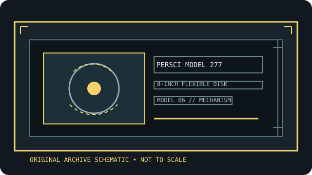

[ INDIVIDUAL COMPONENT // FLOPPY DRIVES ]
PerSci Model 277 8-inch dual diskette drive
This record identifies a real, model-specific 8-inch diskette mechanism. Format capacity and host fit depend on the documented revision, interface options, controller, recording mode, and media; values are not inferred from form factor alone.

IDENTIFICATION NOTE: PerSci Model 277 is a bare mechanism/drive model, not a generic PC floppy peripheral. Match the full label, PCB revision, connector and voltage configuration to the cited manual before connecting or servicing it.
Model specifications
| Catalog subcategory | 8-inch floppy mechanisms |
|---|---|
| Exact model / family | PerSci Model 277 8-inch dual diskette drive |
| Disk format and capacity | Dual 8-inch flexible-disk unit. Format and capacity depend on the supported diskette mode, surfaces, controller geometry, and sectoring; use the Model 277 installation/maintenance manual and record each drive’s exact media format. |
| Host interface | The Model 277 manual specifies signal and power cables plus radial or daisy-chain host arrangements. Use the pin tables and termination guidance; connector shape alone does not prove Shugart or PC wiring compatibility. |
| Data rate | Use the Model 277 manual’s timing and controller interface tables for data rate and clocking. Pair both drives with a controller configured for that exact 8-inch recording mode. |
| Drive select / jumpers | Drive Select 1–4 are explicitly documented; select lines activate each drive. Photograph the board wiring and configure a unique select for each mechanism. Verify in-use, head-load, ready, and termination options from the OEM manual. |
| Dimensions / mounting | Consult the dual-drive Model 277 slide/rack mounting and outline drawings for the complete assembly; ensure mounting does not stress the frame or obstruct disk access. |
| Power requirements | The manual specifies DC supply cabling and rails; it identifies +5 VDC at 1.7 A nominal running (2.2 A maximum) for the described configuration and shows additional rail/ground connections. Check exact nameplate and all rails before energizing. |
| Controller / host compatibility | Requires a compatible 8-inch controller and host that support the PerSci Model 277 interface, select scheme, and chosen disk format. Confirm both unit addresses and drive geometry in host diagnostics before reading originals. |
Model-specific compatibility checks
- Record the complete model suffix, serial/date code, board revision, connector keying, and all drive-select or option links before installation.
- Confirm controller signaling, line termination, host drive-select assignment, recording density, sector geometry, and the manual’s power connector pinout as a single compatible configuration.
- Do not connect by connector shape alone. An 8-inch drive may require non-PC signal conventions, additional DC rails, or a mains-rated supply; follow the model documentation.
Preservation and safety notes
Disconnect host power before handling the multi-rail wiring. Do not hot-plug, adjust servos, or clean heads by guesswork. Keep the original manual, photograph shunts, inspect media, and make verified read-only images before any format conversion.
For archival work, preserve original media in its native format, make a verified read-only acquisition first, checksum retained copies, and log the drive, controller, software, media condition, and any service or conversion performed.
Manufacturer manuals & archive sources
- PerSci Model 277 Installation and Maintenance Manual (DeRamp archive)Model-specific installation, power, cabling, drive-select, mounting, and maintenance reference.
- PerSci Model 277 Product Specifications (DeRamp archive)Separate model specification scan for the PerSci 277 dual-diskette drive.
Consult the exact model/revision manual before applying electrical or service values. Family references are useful only where their coverage matches the marked unit.